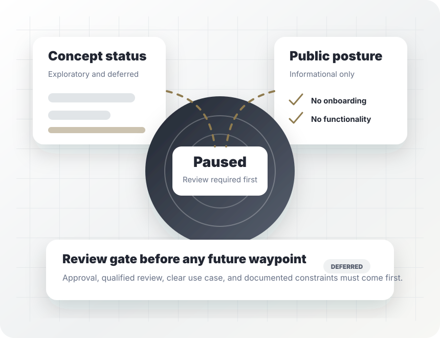

Audience
Not defined for public selling. Any future audience requires explicit approval and qualified review.
Deferred pending qualified review
On-chain Registry is not selling a service, accepting customers, or presenting operational functionality. This static page exists only to state the current status clearly and prevent the concept from being mistaken for an available product.

Current status
The concept requires explicit human approval, qualified review, and a clearly documented use case before any future public positioning. Until then, the site stays conservative, static, and informational.
Local-service offer
The normal Coluve pattern is to make each subsidiary manually sellable first. This concept is the exception: the public posture remains paused because the subject area needs review before any service, audience, pricing, workflow, or functionality can be described.
Not defined for public selling. Any future audience requires explicit approval and qualified review.
Not applicable. No public service is available from this page.
Learn more about the status and boundaries. No onboarding or intake is provided.
What is included
How it works
No public use case, customer type, or functionality is introduced from this page.
Future work must define the intended use, constraints, risks, and approval path before public expansion.
Any future step requires explicit approval and appropriate subject-matter review before implementation.
Trust and proof
This page avoids fake proof, customer claims, product screenshots, operating metrics, and unsupported assurances. Future proof should come only from approved documentation after the concept clears review.
Final CTA
The concept remains deferred pending approval and review. This page is intentionally informational only.